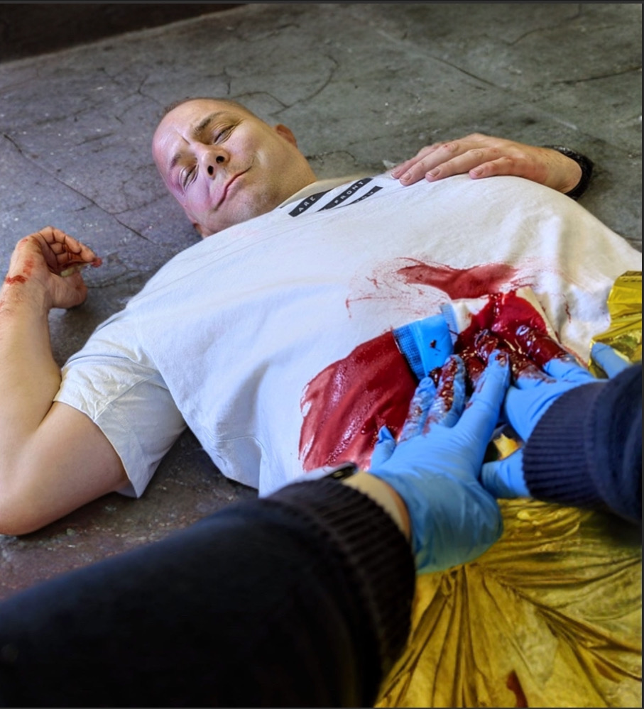

M 32 Jahre alt.
Pat. klagt über Bauchschmerzen
Am Bauch wird durch die Polizei ein Druckverband gehalten!
Blutung steht!
Pat. ist AB-Stabil
Weiter durch klicken
Der Patient gibt weiter Schwindel und Übelkeit an
Im Gesicht sind Hämatome sichtbar.
Er gibt an, dass er Faustschläge ins Gesicht bekommen hat.
Weiter durch klicken
Patienten
schnell aus dem Raum tragen um einen schnellen
Transport einzuleiten
Sofortmaßnahme:
Kontrolle der Wunde und Anlage Verband
Die Polizistin soll weiter die Wunde versorgen!
Zustand ist unverändert
Der Pat ist weiter C-kritisch
Weiter durch klicken
Zustand ist unverändert
Der Pat ist weiter C-kritisch
Weiter durch klicken
SK1
SK2
SK3
SK
Sichtungskategorie wählen
Patientenumhängekarte anlegen
Nächster QR-Scan
Durch klicken

Schließen
Startseite
Einsatz Ende
Einsatz Ende